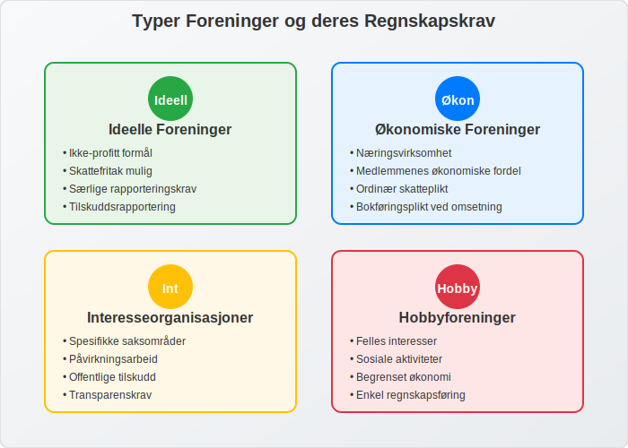
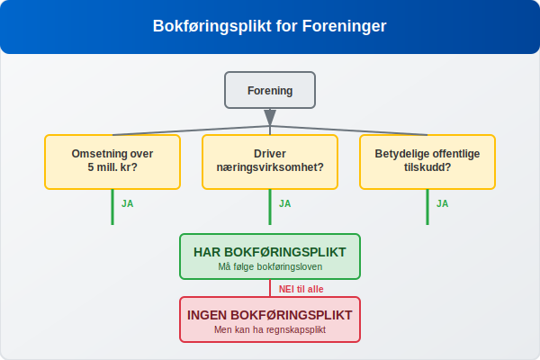
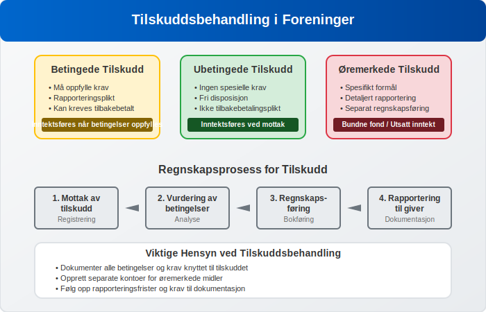
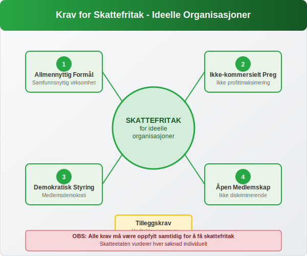

En forening er en sammenslutning av personer som har sluttet seg sammen for å fremme felles interesser eller oppnå et bestemt formål. I regnskapssammenheng har foreninger særlige krav og regler som skiller seg fra ordinære aksjeselskaper og enkeltpersonforetak. Denne artikkelen gir en omfattende oversikt over regnskapsføring for foreninger og organisasjoner i Norge.
En viktig bransjeorganisasjon innen regnskap er Regnskap Norge, som representerer regnskapsførere og regnskapsbyråer over hele landet.
Hva er en Forening?
En forening er en juridisk enhet som består av medlemmer som har sluttet seg sammen for å oppnå felles mål. Foreninger kan være:
- Ideelle foreninger - som ikke har profitt som hovedformål
- Økonomiske foreninger - som driver næringsvirksomhet for medlemmenes økonomiske fordel
- Samvirkeforetak - en type økonomisk forening basert på samvirkeprinsippet hvor medlemmene eier og styrer virksomheten demokratisk.
- Interesseorganisasjoner - som arbeider for spesifikke saksområder
- Fagforeninger - foreninger som representerer arbeidstakernes interesser og ivaretar medlemmenes arbeids- og lønnsforhold. Se også Hva er Fagforening?.
- Hobbyforeninger - som samler personer med felles interesser

Juridisk Status og Organisasjonsform
Foreninger kan være registrerte eller uregistrerte. Registrerte foreninger har egen juridisk status og kan inngå avtaler, eie eiendom og være part i rettssaker. Uregistrerte foreninger har ikke egen juridisk status, og medlemmene har personlig ansvar.
Regnskapsplikt for Foreninger
Bokføringsplikt
Ikke alle foreninger har bokføringsplikt. Bokføringsplikten avhenger av:
- Omsetning: Foreninger med omsetning over 5 millioner kroner
- Næringsvirksomhet: Foreninger som driver næringsvirksomhet
- Offentlige tilskudd: Foreninger som mottar betydelige offentlige tilskudd

Regnskapsplikt vs. Bokføringsplikt
Selv om en forening ikke har bokføringsplikt, kan den ha regnskapsplikt. Dette gjelder særlig for:
- Foreninger som mottar offentlige tilskudd
- Medlemsorganisasjoner med betydelig økonomi
- Foreninger som er underlagt særlige lovkrav
Særlige Regnskapsregler for Foreninger
Medlemskontingent og Inntektsføring
Medlemskontingent er ofte hovedinntektskilden for foreninger. Kontingent er en regelmessig avgift som medlemmer betaler for å opprettholde medlemskap og tilgang til foreningens tjenester. Regnskapsføring av kontingent følger disse prinsippene:
| Kontingenttype | Regnskapsføring | Tidspunkt |
|---|---|---|
| Årskontingent | Periodiseres over året | Når medlemskapet gjelder |
| Engangskontingent | Inntektsføres umiddelbart | Ved betaling/påløp |
| Forskuddsbetalt kontingent | Utsatt inntekt | Når tjenesten leveres |
Tilskudd og Gaver
Foreninger mottar ofte tilskudd fra det offentlige eller private aktører. Regnskapsføring av tilskudd krever særlig oppmerksomhet:
- Betingede tilskudd: Inntektsføres når betingelsene er oppfylt
- Ubetingede tilskudd: Inntektsføres ved mottak
- Øremerkede tilskudd: Må brukes til spesifikt formål

Frivillig Arbeid og Verdisetting
Frivillig arbeid utgjør ofte en betydelig ressurs for foreninger. I regnskapet kan frivillig arbeid behandles på følgende måter:
- Ikke regnskapsført: Vanligst for mindre foreninger
- Noteopplysning: Verdi oppgis i noter til regnskapet
- Brutto regnskapsføring: Både som inntekt og kostnad
Regnskapsoppstilling for Foreninger
Resultatregnskap for Foreninger
Foreningers resultatregnskap har ofte en annen struktur enn kommersielle virksomheter:
INNTEKTER
+ Medlemskontingent
+ Offentlige tilskudd
+ Private tilskudd og gaver
+ Aktivitetsinntekter
+ Finansinntekter
= TOTALE INNTEKTER
KOSTNADER
- Lønnskostnader
- Aktivitetskostnader
- Administrasjonskostnader
- Lokalkostnader
- Finanskostnader
= TOTALE KOSTNADER
ÅRSRESULTAT
Balanse og Egenkapital
Foreningers balanse følger samme grunnstruktur som andre virksomheter, men egenkapitalen kan være strukturert annerledes:
- Grunnkapital: Innbetalt kapital fra medlemmer
- Opptjent egenkapital: Akkumulerte overskudd
- Bundne fond: Øremerkede midler
- Disposisjonsfond: Frie reserver
Særlige Krav for Ideelle Organisasjoner
Skattefritak og Krav
Ideelle organisasjoner kan få skattefritak dersom de oppfyller visse krav:
- Allmennyttig formål
- Ikke-kommersielt preg
- Demokratisk styring
- Åpen medlemskap

Rapportering til Myndigheter
Ideelle organisasjoner må ofte rapportere til:
- Skatteetaten: Årlig skattemelding
- Brønnøysundregistrene: Årsregnskap og årsberetning
- Tilskuddsgivere: Særskilte rapporter
Internkontroll og Styring
Økonomistyring i Foreninger
God økonomistyring er kritisk for foreninger:
- Budsjettarbeid: Årlige budsjetter og oppfølging
- Likviditetsstyring: Sikre betalingsevne
- Investeringspolitikk: Forvaltning av overskuddslikviditet
- Risikostyring: Identifisere og håndtere økonomiske risikoer
Internkontroll og Attestering
Foreninger bør etablere god internkontroll:
| Kontrollområde | Tiltak | Ansvarlig |
|---|---|---|
| Innbetalinger | Dobbel kontroll av kontingent | Kasserer + revisor |
| Utbetalinger | Attestering av alle utbetalinger | Styre |
| Banktransaksjoner | Månedlig bankavstemming | Kasserer |
| Regnskap | Kvartalsvis oppfølging | Styre |
Digitalisering og Moderne Verktøy
Regnskapssystemer for Foreninger
Moderne foreninger benytter ofte spesialiserte regnskapssystemer:
- Medlemsregistre: Integrert med regnskapsføring
- Automatisk fakturering: Av medlemskontingent
- Tilskuddsrapportering: Automatiserte rapporter
- Mobilløsninger: For registrering av utlegg og kvitteringer
Elektronisk Fakturering og Betaling
Mange foreninger implementerer elektronisk fakturering og moderne betalingsløsninger:
- eFaktura: For medlemskontingent og andre tjenester
- Vipps/mobilbetaling: For enkle transaksjoner
- Avtalegiro: For regelmessige betalinger
Revisjon og Kontroll
Revisjonspliktig eller Ikke?
Foreninger kan være revisjonspliktige basert på:
- Omsetning over visse terskelverdier
- Offentlige tilskudd over bestemte beløp
- Vedtektsbestemmelser
- Medlemmenes krav
Intern Revisjon og Kontrollutvalg
Mange foreninger etablerer intern revisjon eller kontrollutvalg:
- Gjennomgang av regnskap og bilag
- Kontroll av vedtak og fullmakter
- Vurdering av internkontroll
- Rapportering til årsmøte
Årsavslutning og Rapportering
Årsavslutningsprosessen
Foreningers årsavslutning følger mange av de samme prinsippene som andre virksomheter:
- Periodisering: Av inntekter og kostnader
- Avskrivninger: På anleggsmidler
- Verdijusteringer: Av finansielle instrumenter
- Avsetninger: For kjente forpliktelser
Årsberetning og Tilleggsopplysninger
Foreninger må ofte utarbeide årsberetning som inkluderer:
- Redegjørelse for virksomheten
- Økonomisk utvikling
- Fremtidsutsikter
- Samfunnsansvar og bærekraft
Utfordringer og Beste Praksis
Vanlige Utfordringer
Foreninger møter ofte disse regnskapsmessige utfordringene:
- Frivillige ressurser: Begrenset regnskapskompetanse
- Sesongvariasjoner: Ujevne inntekts- og kostnadsstrømmer
- Tilskuddsrapportering: Komplekse krav fra tilskuddsgivere
- Medlemsadministrasjon: Håndtering av kontingent og medlemsdata
Beste Praksis for Foreningsregnskap
| Område | Anbefaling | Begrunnelse |
|---|---|---|
| Kompetanse | Kursing av kasserer og styre | Sikrer kvalitet og etterlevelse |
| Systemer | Investering i gode verktøy | Effektiviserer arbeidet |
| Rutiner | Dokumenterte prosedyrer | Sikrer kontinuitet |
| Kontroll | Regelmessig oppfølging | Forebygger feil og misligheter |
Fremtidige Utviklingstrekk
Digitalisering og Automatisering
Foreningssektoren vil se økt digitalisering:
- Kunstig intelligens: For kategorisering av transaksjoner
- Blockchain: For transparent tilskuddsforvaltning
- Integrerte plattformer: Som kombinerer medlemsadministrasjon og regnskap
- Sanntidsrapportering: Til myndigheter og tilskuddsgivere
Regulatoriske Endringer
Fremtidige endringer kan inkludere:
- Strengere krav til transparens
- Harmonisering av regnskapsregler
- Økte krav til bærekraftsrapportering
- Digitale rapporteringsformater
Konklusjon
Regnskapsføring for foreninger krever forståelse av både generelle regnskapsprinsipper og særlige regler for denne sektoren. Fra håndtering av medlemskontingent og tilskudd til kompleks tilskuddsrapportering, må foreninger navigere i et regulatorisk landskap som balanserer transparens med praktiske hensyn.
Suksessfulle foreninger investerer i god økonomistyring, etablerer robuste kontrollsystemer og sikrer tilstrekkelig kompetanse innen regnskap og bokføring. Med riktig tilnærming kan regnskapet bli et verdifullt verktøy for strategisk ledelse og ikke bare en lovpålagt oppgave.
Enten det gjelder en liten hobbyforening eller en stor interesseorganisasjon, er solid regnskapsføring grunnlaget for tillit, transparens og langsiktig bærekraft i foreningssektoren.